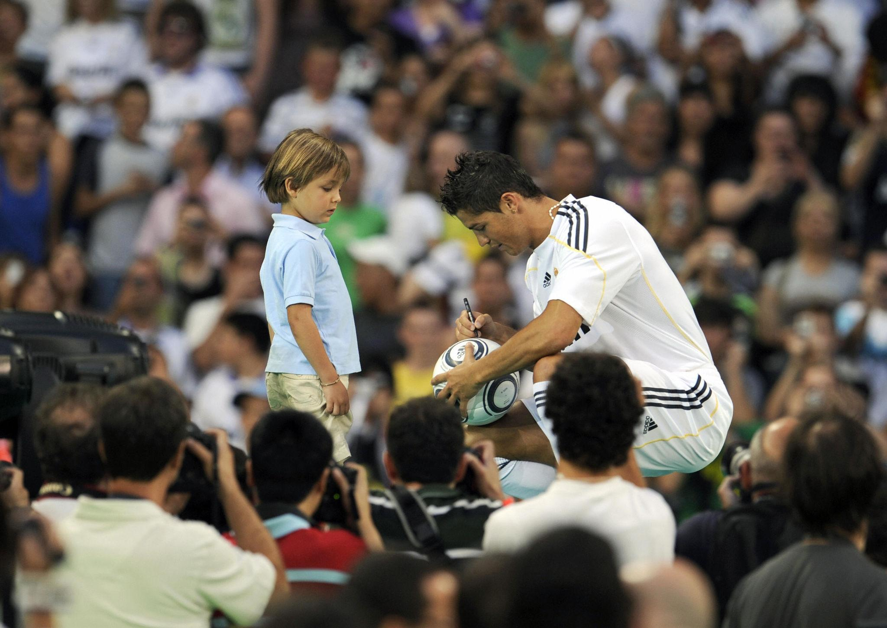
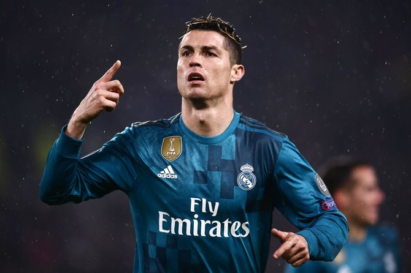
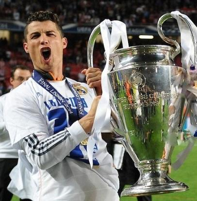
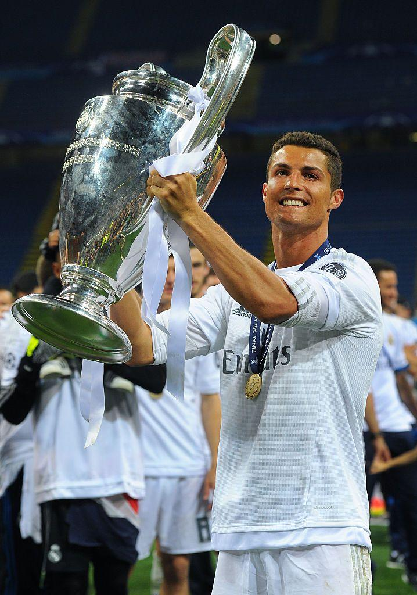
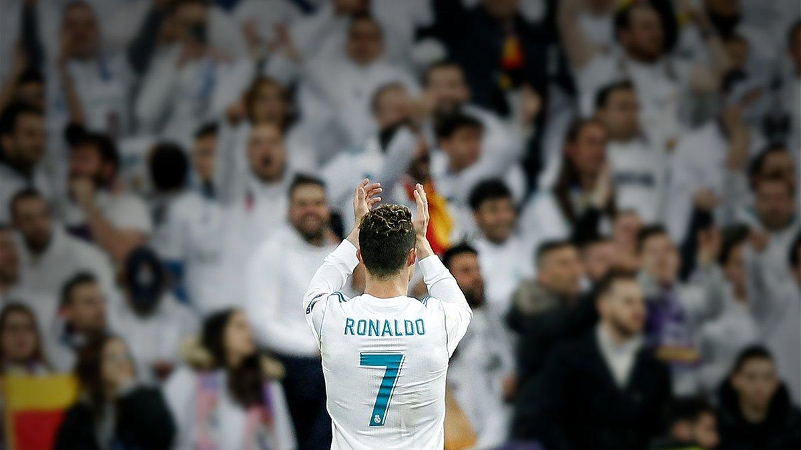

In the summer of 2009, Cristiano Ronaldo joined Real Madrid CF from Manchester United FC for a then-world record transfer fee. More than 80,000 fans packed the Santiago Bernabéu Stadium to welcome him, showing the enormous expectations placed on the Portuguese superstar.
Ronaldo arrived with one mission: help Real Madrid return to the top of European football.

From his first season, Ronaldo transformed Real Madrid's attack. He combined incredible speed, strength, finishing ability, heading, and free-kick technique.
What made him special was not only the number of goals he scored but also when he scored them. In crucial league matches, Champions League knockout rounds, and finals, Ronaldo consistently delivered.
By the time he left in 2018, he had scored:
No player in the club's history has scored more goals.

One of Ronaldo's greatest achievements was helping Real Madrid win La Décima, the club's long-awaited 10th European Cup.
For years, Real Madrid supporters dreamed of winning a tenth Champions League title. In 2014, that dream became reality when Madrid defeated Atlético Madrid in the final.
Ronaldo finished the tournament with a record-breaking goal tally and helped end a 12-year wait for European glory.

The period from 2016 to 2018 is widely considered the greatest era in modern Champions League history.
Led by Ronaldo, Real Madrid became the first club in the modern Champions League era to win the competition:
Ronaldo was the team's leader and top scorer during this historic run. He regularly scored against Europe's strongest clubs and often saved his best performances for the knockout stages.
Team Trophies
Individual Records

When Ronaldo left Real Madrid in 2018, he departed as:
Many Madridistas believe that while legends such as Alfredo Di Stéfano built the club's legacy, Cristiano Ronaldo elevated it to a new level in the modern era.
Cristiano Ronaldo transformed Real Madrid from a great club into the dominant force of modern European football, leading the team to four Champions League titles and becoming its greatest goalscorer of all time. 🤍👑🐐⚽